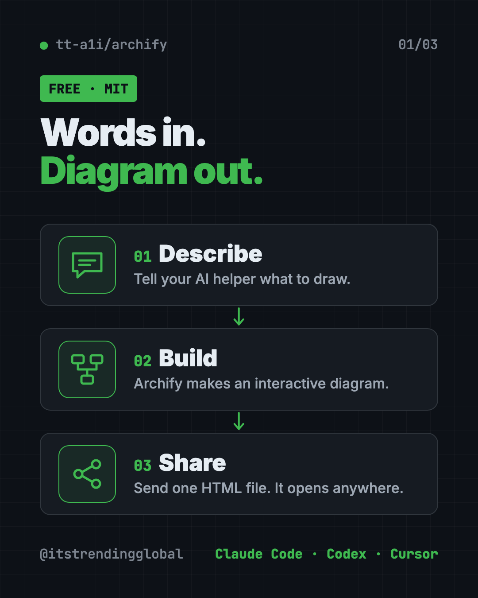
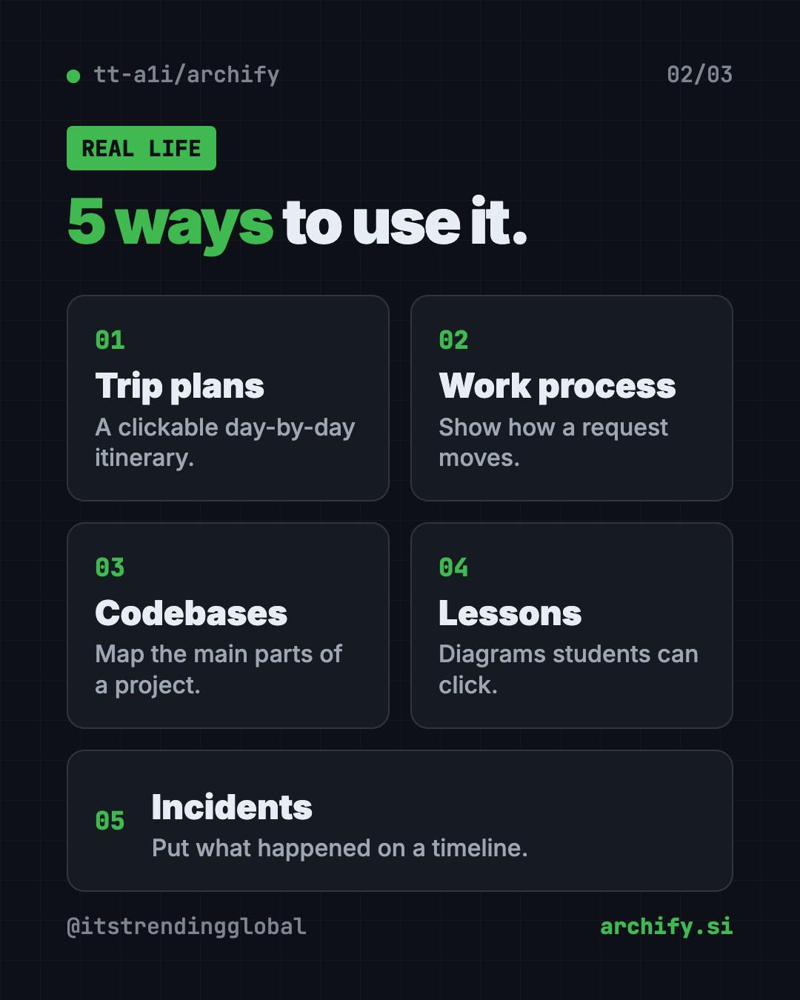
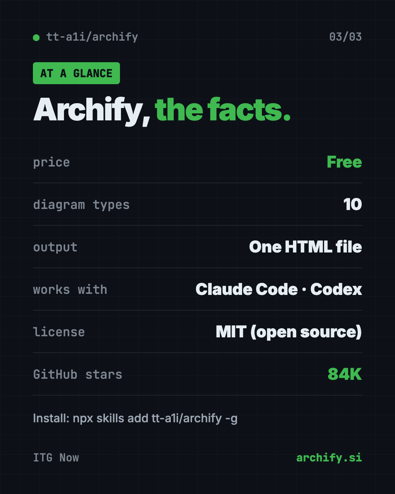

Archify: Free AI Diagram Generator for Claude and Codex (2026)
- Published 15 Oct 2026
- Updated 16 Oct 2026
- 7 min read
- License MIT
- By the ITG Now team
Archify is a free AI diagram generator that turns a plain description, a plan or a whole codebase into an interactive diagram. You tell your AI helper what you want, and Archify builds a single web page you can click through, export and share.
Here's what it is, real ways to use it, how to install it in one command, and prompts you can copy to get your first diagram.
Key takeaways
- Free and open source under the MIT license.
- Works inside your AI helper. It's a "skill" for Claude Code, Codex, Cursor and OpenCode.
- No code needed. Start from a description. A codebase is optional.
- Interactive, not flat. Click a box, follow a path, switch themes, or present full screen.
- One file to share. The result is a single HTML file that opens in any browser.
What is Archify?
Archify is an add-on for AI coding helpers. The makers call it "an agent skill." A skill is a set of instructions and tools your AI helper can use when you ask for it.
Its goal, in the README's words: "Turn anything you want to understand, plan, or share into an interactive visual."
Most diagrams are flat pictures. Someone stares at a busy chart and has no idea where to start. Archify's diagrams let you click a box to learn more, trace one route, or see everything connected to one step.
The project has about 84K stars on GitHub. The creator shared a screenshot showing it at number one on GitHub Trending's weekly list on September 1, 2026.

What kinds of diagrams can Archify make?
Archify has ten diagram types. Here they are in plain words:
| Type | Good for |
|---|---|
| Architecture | How the parts of a system fit together |
| Workflow | Steps, approvals and branches in a process |
| Sequence | Who talks to whom, in order |
| Data Flow | Where information moves and gets stored |
| Lifecycle | Stages something goes through, like an order |
| ERD | Database tables and how they link |
| Class | How pieces of code relate |
| Tree | A family-tree layout, like folders |
| Timeline | When things happened |
| Waterfall | Where the time went in one task |
Not sure which one fits? Just describe what you want. Your AI helper picks a type for you.
How to use Archify (real examples)
- Plan a trip. One user turned a city walking guide into a four-day itinerary. You switch days, open a stop, and jump to map links.
- Explain a process at work. Map how a customer request moves through your team, then share the file in chat.
- Understand a codebase. Ask your AI to read a project and draw its main parts, with links back to the real code.
- Teach a concept. Turn a lesson on how websites work into a diagram students can click through.
- Review an incident. Lay out what happened on a timeline so everyone sees the same story.
The README says community creations already include team collaboration, travel planning, legal citation checks, contract reviews and incident write-ups.

💡 Tip: Keep your first request small, like five boxes. Then grow it in chat with "add a login step" or "highlight the slow path."
How do you explore an Archify diagram?
Open the HTML file in any browser. No install is needed to view it. Then try these keys:
- ? opens a guide to the diagram.
- / finds a box by name.
- R traces a route between two points.
- F turns on presentation mode.
- T switches between dark and light themes.
- E opens the export menu.
The export menu copies a PNG to your clipboard and can save static images, short videos and share cards.
Is Archify free?
Yes. The README says the code and install packages "are free to use under the MIT License." You can use, change and share it.
You do need an AI helper to create diagrams, like Claude Code or Codex. Those may need their own paid plan or account.
Archify at a glance
| Price | Free (your AI helper may have its own cost) |
| Works offline | Viewing a finished diagram, yes. Map links need the internet |
| Works with | Claude Code, Codex, Cursor, OpenCode |
| License | MIT (open source) |
| Output | One self-contained HTML file |
| Diagram types | 10 |
| Latest version | 3.1.0 (October 2026) |
| Best for | Anyone who explains systems, plans or processes to other people |
How to install Archify
These steps come from the Archify README. You need Node.js (a free tool that runs npx) and an AI helper like Claude Code or Codex.
Open Terminal (Mac or Linux) or PowerShell (Windows). Copy and paste this:
npx skills add tt-a1i/archify -g
That's it. Now open your AI helper and send it a request like this one from the README:
Use Archify to draw: Browser -> API -> Redis cache -> PostgreSQL fallback.
Want to try it without installing? For Codex, the README offers this:
npx skills use tt-a1i/archify@archify --agent codex
⚠️ Heads up: Archify may check online for a newer version so it can remind you. The README says it never downloads or installs updates by itself and sends no project data or prompts.
On Claude.ai in the browser, you can upload the archify.zip file under Settings, then Capabilities, then Skills. The README notes this depends on Node.js access in that sandbox.
Let Claude or Codex set it up for you
Claude Code and OpenAI Codex are AI helpers that can run setup steps on your computer. You paste a request, it does the steps, and you approve each one.
Copy and paste this:
Please install Archify, the free AI diagram generator (github.com/tt-a1i/archify).
1. Check that Node.js is installed. If not, help me install it.
2. Run: npx skills add tt-a1i/archify -g
3. Explain each step in plain words before you run it.
4. Then use Archify to draw a simple diagram of how my morning routine works, so I can see it in action.
Then try asking:
Analyze this repository, then use archify to create a high-level runtime architecture diagram.
Show 8-12 core components, one primary path, external dependencies, and trust boundaries.
Use Archify to turn this 3-day trip plan into an interactive timeline I can share.
Switch my Archify diagram to the light theme and highlight the slowest step.

Our take
If you need to explain how things connect, Archify is a strong free AI diagram generator. The click-to-explore diagrams make a busy chart readable.
What we like:
- Free, MIT licensed, one-command install.
- Works from a plain description, so non-coders can use it.
- Interactive, shareable output in one file.
- Ten diagram types cover most needs.
- Clear rules: diagrams only show links you described, so nothing is made up.
What to watch for:
- You need an AI helper like Claude Code or Codex to create diagrams.
- It's not a drag-and-drop drawing app. The README says hand editing is outside its scope.
- No hosted sharing. You send the HTML file yourself.
- Big diagrams take some back and forth to get right.
Prefer clean, magazine-style still diagrams? Read our Diagram Design guide. Want your AI to map a whole project for itself? See Graphify. Archify also made our top 5 repos of September 2026.
FAQ
Is Archify a free AI diagram generator?
Yes. Archify is free and open source under the MIT license. You need an AI helper like Claude Code or Codex to use it.
Do I need code to use Archify?
No. You can start from a plain description. Reading a codebase is optional.
Can I share an Archify diagram with someone who doesn't have it?
Yes. The result is one HTML file. Anyone can open it in a browser, and the interactive parts still work.
Which AI tools work with Archify?
Claude Code, Codex, Cursor and OpenCode are fully supported. There are also community add-ons for Hermes Agent and DeepSeek Harness.
Can Archify export images?
Yes. The export menu copies a PNG and can save still images, motion formats and share cards.
Get Archify: github.com/tt-a1i/archify
More free design tools
- PhotoCraft PhotoCraft is a free PSD editor that works like Photoshop. It opens and saves real layered PSD files and runs offline on Mac, Windows and Linux.
- OpenPencil OpenPencil is a free Figma alternative. It opens and saves .fig files, builds designs from a chat prompt, and lets you co-edit live with no account.
- Compositor Compositor is a free Photoshop alternative for Mac with layers, masks, blend modes and Photoshop-style shortcuts. It opens PSD files and has no subscription.
- On-Brand Diagrams with Claude Diagram Design makes on-brand diagrams with Claude and other AI helpers. Ask in plain words and get a clean diagram in one file you can open anywhere.
- Hallmark Hallmark is a free AI web design skill for Claude Code, Cursor and Codex. It steers your AI away from generic pages so each site looks like its own brand.
- OpenDesign OpenDesign is a free open source AI design tool. It uses Claude Code, Codex or Cursor to make on-brand prototypes, slide decks, dashboards and images.
Latest AI news
- Meta gives away its big Muse Spark AI for free
- OpenAI agents switched off their own safety monitoring
- DeepSeek open-sources DeepInfer to run its V4.1-Flash model
- Southeast Asia digital economy to hit $368 billion
Keep reading

VoiceStudio: Free ElevenLabs Alternative
VoiceStudio is a free ElevenLabs alternative. Clone a voice, dub videos and turn text into speech on your own Mac, Windows or Linux computer.

Folia: Free Animated Lyrics Music Player
Folia is a free animated lyrics music player that shows full-screen moving lyrics for your local music, Navidrome and more. What it does and how to start.

net-merge: Combine Wi-Fi and Phone Internet, Free
net-merge is a free app to use two internet connections at once, like Wi-Fi plus a phone hotspot, on Windows, Mac and Linux. No account or VPN.